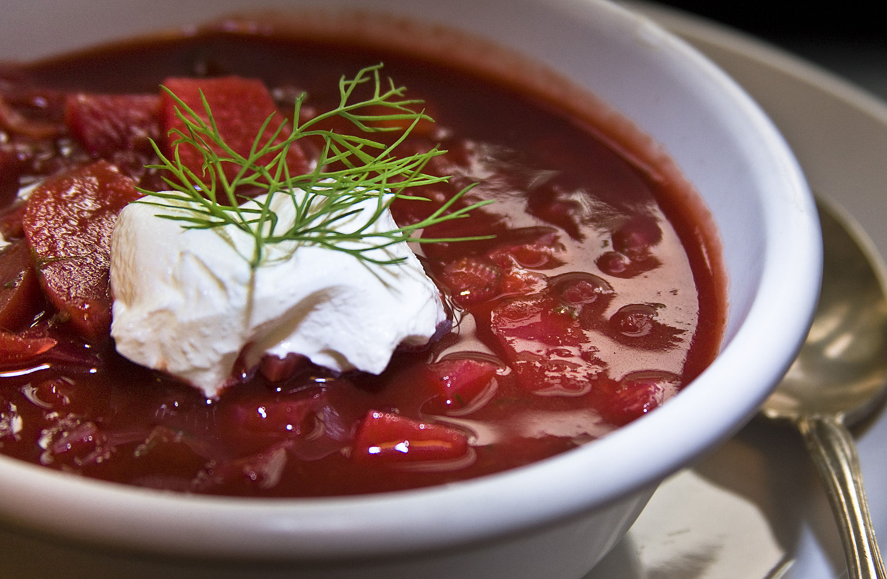

Borscht
Borscht is a sour soup popular in several Eastern European cuisines, including Ukrainian, Russian, Polish, Belarusian, Lithuanian, Romanian, Ashkenazi Jewish and Armenian cuisines. The variety most commonly associated with the name in English is of Ukrainian origin and includes beetroots as one of the main ingredients, which gives the dish its distinctive red color. It shares the name, however, with a wide selection of sour-tasting soups without beetroots, such as sorrel-based green borscht, rye-based white borscht and cabbage borscht.